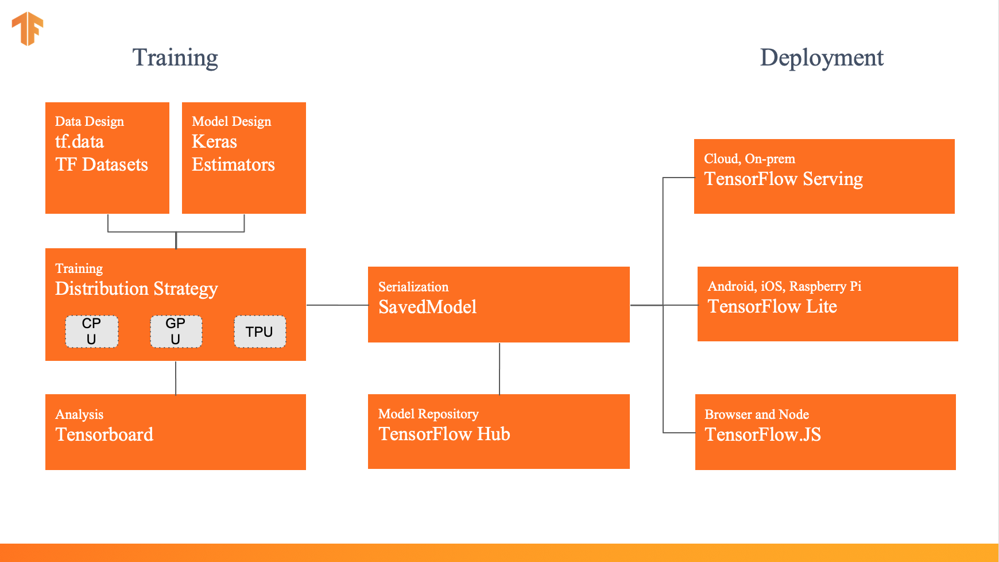
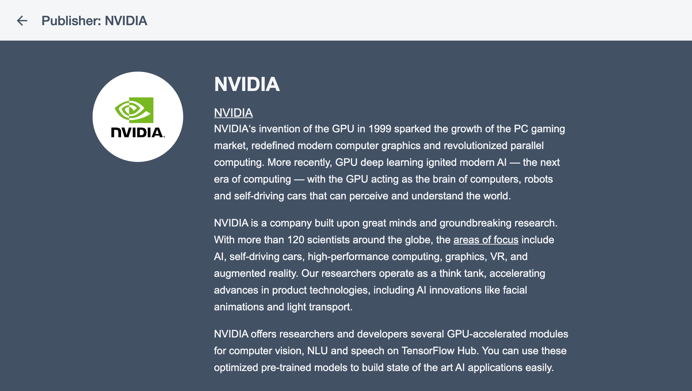
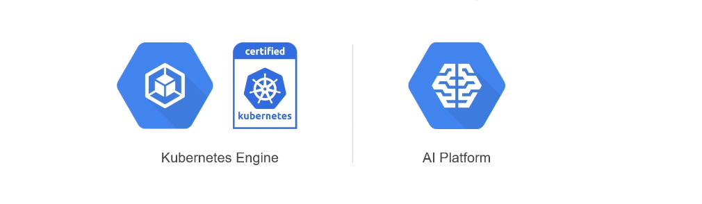

TensorFlow World Extended Tokyo 2019
O'Reilly主催の初のTensorFlowに関するカンファレンス ※ TensorFlow Dev Summit は Google 主催で開発者向けの色の濃いものでした。
10/28 - 10/29: Contributor Summit
10/28 - 10/29: Training & Tutorials
10/30 - 10/31: Talk Sessions
一部のスライドとビデオは公開済
様々な立場の方がトークセッションで登壇
ネットワーキングのための工夫が満載
TensorFlow Dev Summit と違い、色々な企業が参加
TensorFlow2.0 リリースまでの1年で、開発体制が大きく変化
TensorFlow 1.x
TensorFlow 2.0
Slack上でコミュニケーションを取りながら、ドキュメント翻訳をすすめています！
機械学習ライブラリとしての TensorFlow を TensorFlow "Core" と呼び、周辺のライブラリや環境を含めて TensorFlow "Ecosystem" と呼ぶことが増えている（気がする）
※公式ページもライブラリ/フレームワークではなくプラットフォームと表記

利用はとても簡単
hub.KerasLayer
Keras.Layer
import tensorflow as tf import tensorflow_hub as hub tf.enable_eager_execution() module_url = "https://tfhub.dev/google/nnlm-en-dim128/2" embed = hub.KerasLayer(module_url) embeddings = embed(["A long sentence.", "single-word", "http://example.com"]) print(embeddings.shape) #(3,128)
Google に限らず色々なコミュニティーがモデルを提供している

最も多く使用される機械学習フレームワークに成長した TensorFlow をビジネス用途で使うのに不足している部分を、（TensorFlow チームではなく）Google Cloud が補完
TensorFlow を NVIDIA GPU や Cloud TPU 向けに最適化したものを、Deep Learning VM や Deep Learning Container として提供
AI Platform や Kubernetes Engine などの End-to-End な TensorFlow ワークフローの環境を提供（？）
